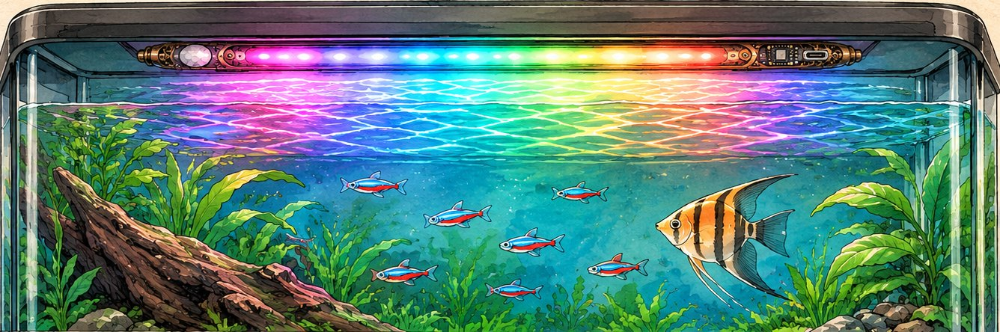
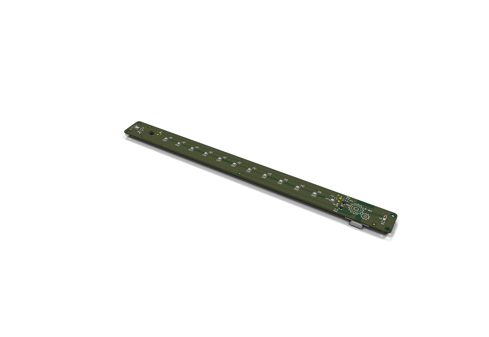

One keeper, a few dozen fish
The keeper would set it up. The fish would have to live with it.
Tests the water weekly, tinkers with everything
A hobbyist with a planted tank in the living room, the kind who would happily open a control panel to set a timer or pick an animation. The bar is designed to be the tank's evening light: it would come on by itself when the room goes dim, pick its colours from what's actually in the tank, and switch off on schedule.
Didn't ask for a light show
So the design keeps it quiet: a dim mood light at around 5 % brightness, colours that fade over seconds instead of flashing, and a sensor that would answer movement near the surface with one gentle ripple. Out of the night window, the lamps are switched off completely.

"It looked at the tetras and turned the surface red and electric blue."Nine at night, room lights off. The bar reads the tank once at dusk and paints it back onto the water.
It reads the tank, then plays it back
Pick a tank and a mode. The bar flashes white for a moment, its colour eye reads what bounces back, and the twelve lamps settle into a palette. Then send a fish up under the dome.
Lumina control panelHosted by the bar · N° 004
A simulation of how the light is designed to behave: no firmware has been written yet. The tank colours here stand in for what the colour sensor would read, and the real bar hangs face-down, so you'd see the light on the water, not the lamps.
A brass bar you could actually mould
A first-pass CAD model sized around real parts: 300 mm long, 26 mm wide and 11 mm thick, with the dome standing 10 mm proud. The lamp face points up here; under the lid it would hang face-down over the water. Drag to spin it.
- Brass deck over a gunmetal baseTwo moulded halves split along a visible step and sealed with a silicone cord, painted and antiqued to look like milled brass. Splash-proof, not submersible.
- Faceted domeSmoky amber and see-through to infrared. The sensor behind it watches for fish near the surface and for the room going dark.
- Porthole buttonA brass eyepiece over a tiny switch: wake, change mode, or hold to open the Wi-Fi control panel.
- Lamp windowTwelve squares on a frosted diffuser, one RGB LED behind each.
- Viewing window and colour eyeSmoked glass over the microcontroller, then a chrome oval over the colour sensor.
- Side USB-C and clip railThe charging port hides behind a tethered brass plug on the long edge. A 160 mm rail stays taped under the lid; the bar snaps in and out of it.
What's inside
One long two-layer board, 248 × 21.4 mm, runs almost the whole bar. The lamps, sensors and button face the water; a XIAO ESP32-C6 is soldered flat on the back, with its USB-C at the side edge. Two slim LiPo pouch cells lie underneath.
The brain
Wi-Fi for the control panel, USB-C, LiPo charging and a 15 µA deep sleep on one thumb-sized board. It's soldered flat, because sockets would add 8 mm to an 11 mm bar.
Fish and dusk
Pulses infrared through the dome and reads what comes back, so a fish near the surface changes the reading. Its ambient channel says when the room is dim.
Colour eye
A true RGB + IR sensor behind the chrome oval. The lamps flash white for a moment and it reads the colour that bounces back from the tank.
The lamps
Twelve 2 mm RGB LEDs, one under each window square, on a single data line.
Day switch
Cuts power to the whole LED chain outside the night window, since each LED draws about 1 mA even when dark.
Porthole
A 2.5 mm-tall switch under the brass button. It's wired to a pin that can wake the chip from deep sleep.
Full bill of materials (… lines)
How we got here
From a random roll to a routed board in one episode. The twist, "built into a found object", became the aquarium itself: the thing the light lives on and reads. Along the way the concept's PIR sensor became an optical one (a PIR can't see through water) and the USB-C moved from the face to the side edge.
ConceptThe chosen concept board Control drawingFace, side and three-quarter views 3D modelSolidcraft enclosure 
ElectronicsThe 248 mm carrier, routed


What we still don't know
This is a speedrun first pass. Here's what we'd answer before anyone orders a board or cuts a mould.
- Board
Routed and clean, but never built
The XIAO ESP32-C6's battery pads and antenna end are taken from Seeed's footprint and wiki. Both need checking against a real board before ordering.
- Sensing
Can it see fish through water?
Water soaks up the sensor's infrared within a few centimetres, so it would only notice fish near the surface. The firmware could also watch the colour sensor for fast flicker as a second cue.
- Colour
What does one sensor make of a whole tank?
It reads the blended reflection of everything below, not each fish. Whether that blend turns into a palette people actually like is untested.
- Dome
Which amber resin passes infrared?
Amber and smoke dyes are usually near-clear at 950 nm, but tinted plastics vary. The chosen resin needs a proximity test before it's committed.
- Power
Blue fades on a tired battery
The LEDs run straight from the cell, and below about 3.6 V their blue dims, so the firmware would stop at 3.5 V and ask for a charge. A 5 V boost would fix it. Charging could also take around 12 hours.
- Finish
Brass paint versus Wi-Fi
A metallic-flake "brass" would detune the antenna, so the patch above it needs a non-metallic finish. The rail's snap grooves also leave a thin 0.7 mm wall.